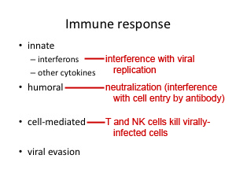

The correct answer is "T and B cells."
No. You didn't miss it. It wasn't stated explicitly that this is main thrust of the immune response in the videos. So, the effects of the various arms of the immune response have been added to the slide shown below.
